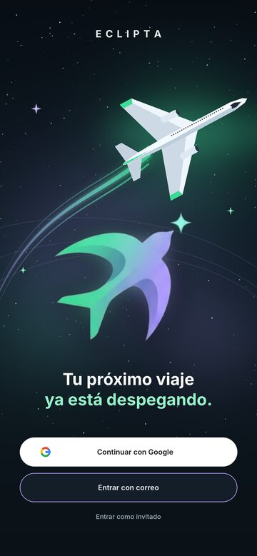
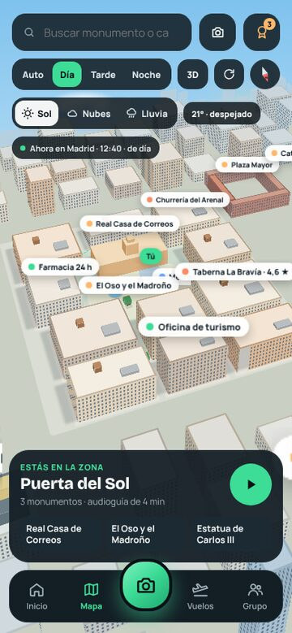
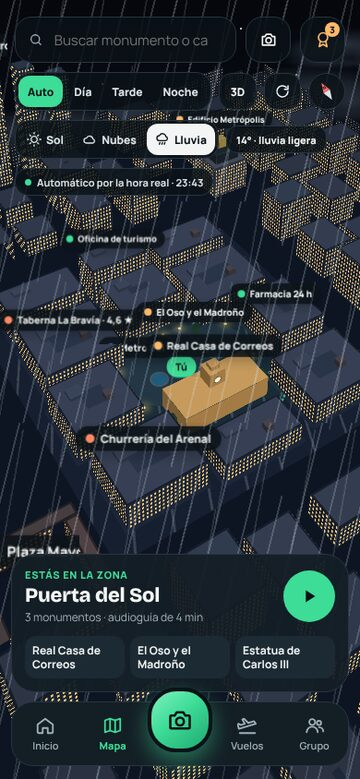
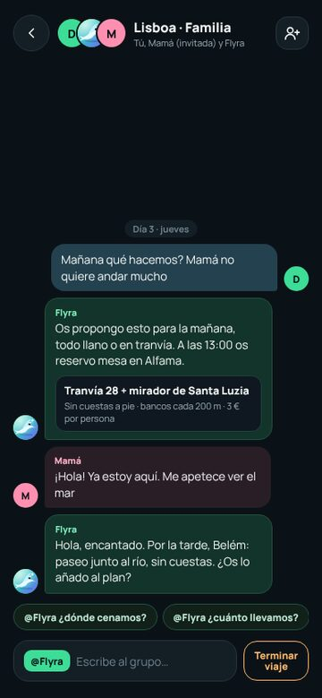

ECLIPTA
Tu próximo viaje ya está despegando. Un asistente de viaje con Flyra, mapa, audioguías, vuelos y viajes en grupo.
Qué hace
- Flyra, tu asistenteUn chat con Flyra, la IA de la app, para preguntar por tu viaje. También contesta dentro del chat de un viaje en grupo. Necesita conexión: responde nuestro servidor.
- Mapa y audioguíasMapa con zonas de interés y audioguías que se activan al entrar en una zona (con el modo viaje, si tú lo enciendes). Se pueden descargar ciudades para usar sin conexión.
- Cámara de monumentosApuntas a un monumento y la app te dice qué es y te lo cuenta. Usa tu posición y la brújula; la foto se procesa y se descarta.
- VuelosAlertas de bajada de precio de las rutas que sigues, buscador y mapa de tarifas, y la ruta del vuelo. Al reservar sales a la web de la aerolínea o del buscador.
- Viajes en grupoChat del viaje con Flyra, planes que se votan deslizando tarjetas y una negociación entre las preferencias de todos.
- Gastos compartidosBotes para repartir cuentas, con lectura de tickets en tu móvil y cambio de divisa.
- Bóveda cifradaTus documentos (pasaporte, seguros) cifrados en el móvil y protegidos con huella. No llegan a nuestro servidor.
- Papeles y seguridadRevisión de pasaporte y visado por destino, tus derechos si hay retraso (reglamento europeo 261) y un botón SOS con números de emergencia del país.
- Más cosasTraductor de cartas de restaurante, aeropuerto, colas, widgets en Android, y la app está traducida a 25 idiomas.
Así se ve




Son diseños de la interfaz (maquetas): la app real puede diferir en detalles. Los textos de ejemplo y precios de estas imágenes son ilustrativos.
Enlaces de afiliado y cómo nos financiamos
ECLIPTA es gratis y no tiene anuncios. Algunos enlaces de reserva (vuelos, alojamiento) pueden ser de afiliado, por ejemplo de Travelpayouts/Aviasales o de Booking.com: si reservas desde ellos, podemos recibir una comisión sin que pagues más. La app no inventa precios: te lleva a la web del vendedor y allí ves el precio real.
Privacidad
Muchas cosas (documentos, fotos, recuerdos, tarjeta médica) se quedan solo en tu móvil. No hay publicidad, no usamos analítica de terceros y no vendemos datos. Puedes borrar tu cuenta desde la app.
Política de privacidad · Borrar tu cuenta
Contacto y código
Escríbenos a __SUPPORT_EMAIL__.
El código está abierto (licencia MIT): github.com/dp2005dario/nomad-iq
ECLIPTA · © 2026